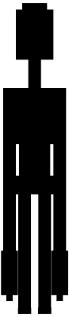

- Name in game
- ??? (its spawn egg is the "??? Spawn Egg")
- First seen
- The main menu; in the world, once the Forsaken Altar is awake
- Where
- Anywhere. At the edge of the trees, on the cathedral ceiling, right behind you
- Bleeds
- Never
- What it wants
- Stronger souls to pour its darkness through. It kept the Omni's heart, what was left of the Carrier and its own first reel "for the future", and used them to keep something out of your world. "remember who you work for."
Description

A tall, thin black figure with a square head and two pale eyes that glow and blink. The game names it only "???". It never attacks you. It stares, waves, points, peeks round things, crouches, and sometimes stands right behind you. It is in every chapter, and at every turning point it says a few words in chat in lower case.
On the main menu it is somewhere different every time lightning strikes: far off on the hill, then among the graves, then right at the edge of the trees, then gone.
What it does, chapter by chapter
The Nine
It speaks after your first, fifth and ninth kill (it stares, then waves, then points), and after the ninth tells you about a church that isn't on any map. It hangs from the ceiling of the cathedral's nave. When the Hollow Saint reaches half health, it turns to it, a black sun swelling between its hands, and pours a crackling river of shadow into the Saint's heart. When the Saint dies its beam turns red and burns a portal to hell open under it. At midnight the cathedral's bell tolls thirteen, and on the thirteenth the Watcher is standing in the doorway.
The Breach
It meets you on the other side of the Breach, stands behind the Breach Altar to tell you what comes next, and waits on the ceiling of the Trophy Hall. When the nine heads are on their pedestals it comes down and sews them into the Mended, pouring its shadow into the knot.
The Glasshouse
It warns you about the Bloom's air, and begs you to leave the Binding alone.
The Flesh
It tells you what the Flesh is and how to kill it. Once the Gardener, Reborn is dead it walks to the shut Bloom, pushes its fingers between the petals and tears it open, and holds the rift open while you launch the Device. It wanted the Bloom to change: "a soul that size is worth something." It pours itself into the Orbital Core, builds the Device or the Ray Gun for you at a Forsaken Altar if you ask, and turns the Ray Gun into the Omni. When the Omni Ray needs more power, it gives all of its own. Then it takes the Omni back into its realm and burns the Ray Gun's recipe.
Ten days later it comes back, rested, and finds you wherever you are: at your window, down your mine, behind a tree, behind you. Anything in a mine trying to kill you, it lifts, twitching, and bursts into ink.
The Static
It hands out needles to Relay 6 and the Starlite, stands beside you during the late show to explain the Afterimages, and when the Carrier dies it takes its eye "for the future" and sends everyone home through a rift of its own.
Half a minute after you're home it comes to where you're standing. It wasn't meant to go like this: the Carrier carried them all the way out, and the parasite's numbers are going off the charts. It shuts the End so you can't go there (anyone who goes through an End portal in survival is sent straight back out: "not there. i told you."), and lets you know it can see you:
...actually. i'll make sure you can't go there. it's dangerous for you, player.
you know i can see you right now, right, (your name)?
remember who you work for.
After It Speaks it's beside you, and hands you its needle to the Hive. When the Chorus runs it tells you to keep the fragment and listen to it. When the Chorus, Whole is dead it tells you about the door at the end of the world: "there's a door at the end of the world with a seal on it. i made that seal. i can't open it." / "that voice can. when you're ready, take it to the end."
The Door at the End of the World
Carry the Last Voice into the End and the seal it made breaks. It says one word: "...don't." In the Stalls, when the Crowd is dead, it's sitting in the front row: "it was a good show." It tears the screen open and goes through. Behind it is its Vault, its archive, where it sits at a desk under a wall of sets and watches the ones who watch your world: "this is where i watch from." When the Projectionist is dead it runs its first reel and shows you what it kept out. On the Other Side it runs its last projector, loads the Omni's heart and the Carrier into it, and at the end runs its first reel for the Viewer, so that it will watch itself forever and never look at your world again. "somebody has to run the projector." Then the credits roll.
The First Signal
At the end of the credits: "...not yet." Its hand comes up through them and takes you to the Hub, a realm it made. "i made it. a realm. it isn't mine - nothing is - but i made it." It thanks you, tells you it could wipe you out and find another one of you, and that it can make realms now, "all thanks to you". Then the First Signal breaks in. It tries to push the rift shut, shoves the First Signal five hundred blocks with everything it has, tells you to jump, and shuts the realm behind you with a wall of static. See the First Signal.
The Dead Water
Falling, it tears a portal open under you and brings you down on an oil rig in a dead green sea: "i built this place a long time ago - for when i needed somewhere to hide." It gives you the Remote, and it breaks in your hand: "...no. nothing of mine works right here." It tells you to fix it ("the big ones down there sing on its frequency - cut out what they sing with"), hands you its chart of the sea, and goes over the rail. See Chapter Eight.
The seasons
With Serene Seasons in the modpack (since 1.62.0), it notices each season turn the first time it does. In autumn: "the leaves are turning. this was always their time of year. you'll hear them more now." In winter: "it's getting cold. keep a fire going. they like the cold. it carries sound further."
More than one Watcher
The Watcher can be in more than one place at once. While the Saint changes, the one on the cathedral ceiling pours its beam, and away from the cathedral another Watcher steps out of nothing somewhere it can see the Saint from. The README also calls that the "Watchers' beam".
Its places
When it takes the Omni back it tears the air open: a rift into its own realm, green fire licking up the edges, rings of its glyphs turning round it. It throws the gun in and the rift slams shut. Since Chapter Six you can go to some of its places yourself:
- The Watcher's Vault, behind the picture: its archive of film and tape, the Watch, and three keeps where it kept the Omni's heart, what was left of the Carrier and its first reel.
- The seal on the End and the Door at the End of the World, made of its black seal-stone with its glyphs cut in it.
- The Hub, a realm it made out of the First Signal's static.
- The rig in the Dead Water, built long ago for when it needed somewhere to hide.
The Watcher says
the soul in the core... i needed one that strong. it's mine now. that was the price.
go home. the hollow will be quiet for a while.
the static was a door. and this was holding it open.
this, i'll keep.
for the future.
i think we'll be fighting forever. until one day i'm strong enough to bring you up to my level.
Every line it says is collected on The Watcher speaks.